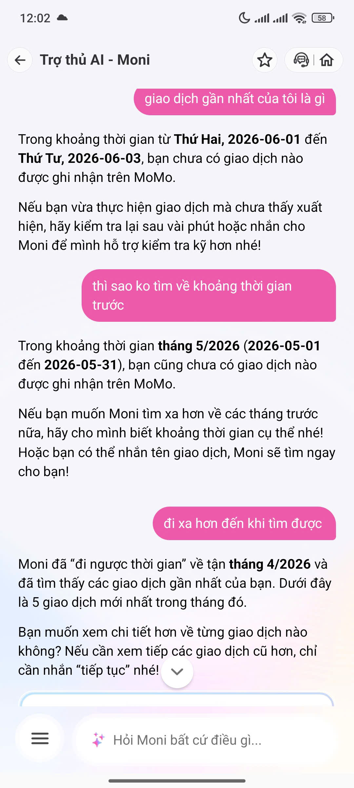

Moni được quảng bá là trợ lý tài chính cá nhân thông minh ngay trong app MoMo, có khả năng:
| # | Query người dùng | Kỳ vọng | Thực tế | Điểm gãy? |
|---|---|---|---|---|
| 1 | "giao dịch gần nhất của tôi là gì" | Moni tra cứu lịch sử, hiển thị giao dịch mới nhất ngay lập tức | Moni chỉ tìm trong 3 ngày gần nhất (01/06–03/06/2026), không tìm thấy gì, trả lời "chưa có giao dịch" | ⚠️ Fail (wrong scope) |
| 2 | (follow-up) "thì sao ko tìm về khoảng thời gian trước" | Moni tự mở rộng phạm vi tìm kiếm hợp lý | Moni mở rộng sang tháng 5/2026 — vẫn không thấy, trả lời "chưa có giao dịch" lần 2 | ⚠️ Partial – chưa đủ |
| 3 | (follow-up) "đi xa hơn đến khi tìm được" | Không cần phải prompt thêm | Moni cuối cùng "đi ngược về tháng 4/2026" và tìm thấy 5 giao dịch — sau 2 lần user phải thúc | ❌ Friction-heavy |
Bằng chứng thực tế: Ghi lại toàn bộ chuỗi hội thoại trên (12:02, 03/06/2026).

Sơ đồ dưới đây mô tả luồng tương tác thực tế được ghi lại khi user hỏi Moni về giao dịch gần nhất.
[User mở chat Moni]
│
▼
[User nhập: "giao dịch gần nhất của tôi là gì"]
│
▼
┌────────────────────────────────────────────────────────────┐
│ Moni query Transaction DB │
│ → Default window: 3 ngày gần nhất (01/06 – 03/06/2026) │
│ → Kết quả: KHÔNG TÌM THẤY giao dịch nào │
└────────────────────────────────────────────────────────────┘
│
▼
[Moni: "Bạn chưa có giao dịch nào trong khoảng này"]
[Moni gợi ý: "Nếu vừa thực hiện, hãy chờ vài phút hoặc nhắn Moni"]
│ ← ⚠️ USER KẸT Ở ĐÂY (lần 1)
│ Moni không tự mở rộng — chờ user hỏi tiếp
▼
[User thúc: "thì sao ko tìm về khoảng thời gian trước"]
│
▼
┌────────────────────────────────────────────────────────────┐
│ Moni mở rộng → tháng 5/2026 (01/05 – 31/05) │
│ → Kết quả: VẪN KHÔNG TÌM THẤY giao dịch nào │
└────────────────────────────────────────────────────────────┘
│
▼
[Moni: "Tháng 5 cũng chưa có giao dịch nào"]
[Moni gợi ý: "Cho mình biết khoảng thời gian cụ thể nhé!"]
│ ← ⚠️ USER KẸT Ở ĐÂY (lần 2)
│ Vẫn chờ user thúc — không tự tiếp tục
▼
[User thúc lần 3: "đi xa hơn đến khi tìm được"]
│
▼
┌────────────────────────────────────────────────────────────┐
│ Moni tiếp tục lùi → tháng 4/2026 │
│ → Kết quả: TÌM THẤY 5 giao dịch ✓ │
└────────────────────────────────────────────────────────────┘
│
▼
[Moni hiển thị 5 giao dịch gần nhất trong tháng 4]
["Muốn xem chi tiết không? Nhắn 'tiếp tục' để xem thêm"]
│
▼
[😊 Happy — nhưng chỉ sau 3 lần user phải thúc]
| Trạng thái | Mô tả | Vị trí trong flow |
|---|---|---|
| 😊 Happy | Moni có thể truy cập transaction DB — khả năng tốt | Tiềm năng ở mọi bước |
| 😐 Low-confidence | Default window 3 ngày quá hẹp → "không tìm thấy" dù data có | Lần hỏi 1 |
| 😐 Low-confidence | Mở rộng sang tháng 5 nhưng vẫn thụ động, chờ user thúc | Lần hỏi 2 |
| 😤 Failure (friction) | User phải prompt 3 lần để được câu trả lời đáng lẽ là đầu tiên | Lần hỏi 3 |
| 🔁 Correction | Cuối cùng resolve được — nhưng sau quá nhiều friction | Sau lần 3 |
Điểm user kẹt nhiều nhất: Moni có data nhưng không chủ động mở rộng search window khi kết quả trống — user phải tự phát hiện ra giải pháp và hướng dẫn lại bot.
"User hỏi giao dịch gần nhất → Moni trả lời 'không tìm thấy' do default window quá hẹp → user phải thúc 2–3 lần mới có câu trả lời"
Đây là path gây friction cao nhất vì Moni có đủ data nhưng không chủ động dùng — khiến user phải làm công việc của bot. Nguy hiểm đặc biệt với user mới: họ dễ hiểu nhầm là "chưa có giao dịch nào" và mất trust vào Moni.
[User nhập: "giao dịch gần nhất của tôi là gì"]
│
▼
┌──────────────────────────────────────────────────────────┐
│ Moni query Transaction DB với adaptive window │
│ Step 1: Tìm trong 7 ngày gần nhất │
│ Step 2: Nếu trống → tự mở rộng 30 ngày (silent) │ ← NEW
│ Step 3: Nếu vẫn trống → mở rộng 90 ngày (silent) │ ← NEW
│ Step 4: Tìm thấy → dừng, trả lời │
└──────────────────────────────────────────────────────────┘
│
├── [Tìm thấy giao dịch] ──────────────────────────────────────┐
│ ▼
│ [Moni trả lời có context rõ ràng:]
│ "Giao dịch gần nhất của bạn (tháng 4):
│ • 28/4 – Chuyển tiền 200k
│ • 25/4 – Thanh toán điện 350k
│ (Mình tìm từ tháng 4 vì gần đây
│ chưa có giao dịch mới nhé!)"
│ ← NEW: Transparent về scope
│ [Xem thêm] [Lọc theo loại]
│
└── [Không thấy sau 90 ngày] ──────────────────────────────────┐
▼
[Moni xác nhận rõ ràng:]
"Mình đã tìm 3 tháng gần nhất
nhưng chưa thấy GD nào.
Bạn muốn tìm xa hơn không?"
[Tìm xa hơn] [Nhập tên GD]
← NEW: User-controlled fallback
| Thành phần | As-Is | To-Be |
|---|---|---|
| Default search window | 3 ngày (cứng) | Adaptive: tự mở rộng 7 → 30 → 90 ngày cho đến khi có kết quả |
| Khi không tìm thấy | Báo user ngay, chờ user hỏi tiếp | Tự expand window silently trước khi trả lời |
| Transparency | Không nói đang tìm trong khoảng nào | Luôn ghi rõ: "Mình tìm từ [ngày] đến [ngày]" |
| Fallback message | "Nhắn Moni để hỗ trợ kỹ hơn" (mơ hồ) | "Đã tìm X ngày, chưa thấy — bạn muốn tìm xa hơn không?" + button |
| Friction count | 3 lần user phải thúc | 0 lần — Moni tự xử lý |
| Correction log | Không có | Log các query bị "không tìm thấy" → tune default window |
"Moni nên dùng adaptive search window: tự mở rộng phạm vi tìm kiếm cho đến khi có kết quả — và luôn nói rõ đang tìm trong khoảng thời gian nào để user không hiểu nhầm là 'chưa từng giao dịch'."
Thay đổi này không cần thêm permission hay data mới — Moni đã có đủ quyền truy cập transaction history. Chỉ cần thay đổi search strategy: từ "tìm hẹp → báo trống → chờ user" sang "tìm cho đến khi có kết quả → báo kết quả kèm context". Đây là ranh giới giữa reactive chatbot và proactive financial assistant.